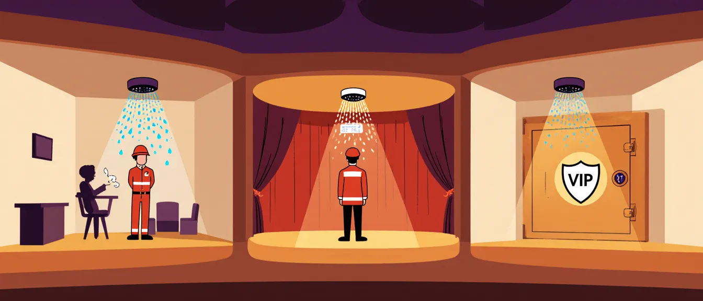
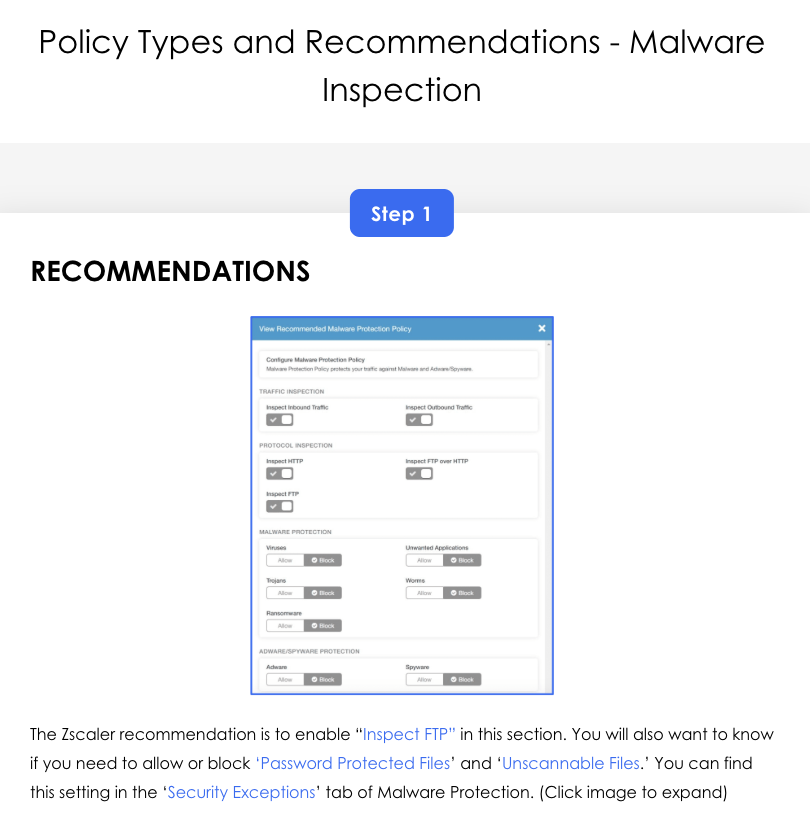
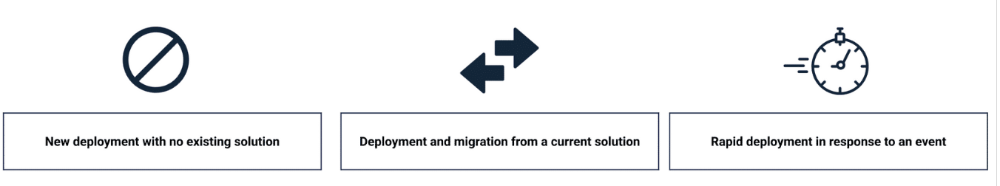
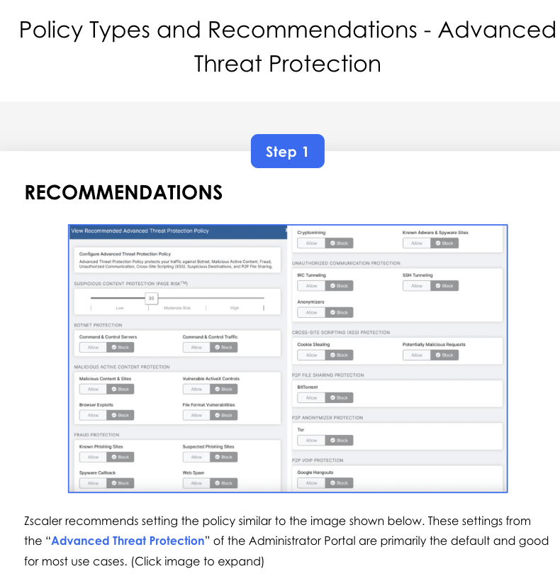

ZIA policy design for Malware + Sandbox, the 3-phase configuration model (Global / Granular / Advanced), policy recommendations across SSL Inspection, Advanced Threat Protection, URL & Cloud Application Control, Firewall, and Cloud Browser Isolation — plus deployment scenarios for hybrid workforces and executive-level isolation.
Cyberthreat protection is defence in depth, layered through 3 configuration phases.
Section 6 was about who reaches what; Section 7 is about what they're protected from when they do. The cyberthreat layer sits across SSL inspection, malware, ATP, sandboxing, URL/Cloud App, firewall, and Cloud Browser Isolation — and the consultant's job is to sequence them across Global → Granular → Advanced phases so the customer never gets either over-blocked or under-protected.
💭THINK FIRST · OVERVIEW
Cyberthreat Protection is delivered through three configuration phases — Global (the baseline every customer needs), Granular (tuned to business), Advanced (optional, depending on subscription). Before reading on, think about what those three phases imply.
The Granular phase appeared in Section 6 (URL Filter, Cloud App, File Type, Firewall). Why does Section 7 re-cover Granular Control instead of saying "see Section 6"? What's different about granular control when the lens is cyberthreat instead of access?
The course outcomes are "Describe / Explain / Apply" — no "Configure." Why is configuration deliberately downplayed at the consultant level?
"Advanced" includes Cloud Browser Isolation. Why is CBI considered advanced (not granular), and what is the customer signal that says "we need CBI now"?
Q1 — MODEL ANSWER
Section 6 was Granular Control through the lens of "who can reach what". Section 7 is Granular Control through the lens of "how to spot and stop threats". URL Filter shows up in both — but Section 7 is interested in blocking phishing categories and recently-registered domains, not "let HR use LinkedIn." Same surface, different verb.
Q2 — MODEL ANSWER
A consultant who can only configure is replaceable by a script. The consultant's value is choosing which controls, in what order, against which business risk — and being able to defend those choices to a customer. "Describe / Explain / Apply" reflects that the consultant brings the design judgment; the customer's engineer brings the click-through.
Q3 — MODEL ANSWER
CBI is "optional" — it's a subscription add-on, not bundled by default. Customer signal: high-value targets (executives, finance, M&A teams) who need to access uncategorised or risky sites without exposing their endpoints. The CBI offer kicks in when "block" is too coarse and "allow with no protection" is too risky.
COURSE OVERVIEW
Welcome to Cyberthreat Protection Services
This course is divided into two main sections, each crafted to build your understanding gradually:
1 · Course Overview
Build on what you've learned in EDU-200 (Course 6 of 10) and EDU-202 (Course 7 of 11) by giving you a quick recap of what you have learned already. We'll cover the common deployment types and a high-level look into the recommended configurations.
2 · Cyberthreat Protection Policies
In the second section, we will go through the policies that apply to cyberthreat protection. Learn what recommendations to follow and how to apply them based on scenarios.
By the End of This Course, You'll Be Able To:
Describe the types of policies that apply to cyberthreat protection.
Explain where and when to leverage appropriate cyberthreat protection policy.
Apply appropriate cyberthreat protection policies based on common deployment scenarios.
Analogy
If access control was the dress rehearsal, cyberthreat protection is the building's fire-suppression system. The audience is in their seats, the actors are on stage — and you've quietly installed sprinklers in the ceiling, smoke detectors backstage, a fire warden patrolling the corridors, and a separate vault for the most flammable props. Three concentric layers — sprinklers everywhere (Global), zoned suppression in critical wings (Granular), and a specialised hazmat protocol just for the executive suite (Advanced).

📷 A1.png — add this image to the folder
Flat minimalist cartoon illustration of a theatre's three-layer fire-suppression system as an analogy for cyberthreat protection phases. Wide composition with a cutaway theatre. Ceiling everywhere: a network of friendly sprinkler heads showing tiny droplets ready (Global controls). Middle zone: smoke detectors and zoned suppression in critical backstage wings, with a fire warden in a hard hat patrolling (Granular controls). Right zone (executive suite, with a small "VIP" label): a separate glowing hazmat vault with reinforced walls, a single shield icon glowing softly (Advanced controls / CBI). Soft warm theatre lighting, mood of calm preparedness. Clean geometric shapes, flat illustration style, bold outlines, simple cartoon characters, no text labels, no UI elements, educational infographic feel, modern tech-analogy aesthetic.
ASK A QUESTION
ADD A NOTE
💭THINK FIRST · RECAP
EDU-200 covered Malware, Cloud Sandbox, Cloud App Control, Cloud Browser Isolation, Secure Browsing. EDU-202 added Advanced Threat Protection (ATP), IPS, Zscaler Deception, Private App Protection, more on CBI. EDU-302 is where you sequence them.
"Security must be applied in layers" — Zscaler Malware co-exists with CrowdStrike / SentinelOne (EDR). What's the consultant's job when the customer already has EDR and asks "why do we need Zscaler Malware too?"
EDU-202 introduced Zscaler Deception (decoy assets that bait attackers). Why is Deception a different category of defence than Malware/IPS — and where would you place it in a typical deployment timeline?
Q1 — MODEL ANSWER
EDR sees what's already on the endpoint; Zscaler Malware sees what's trying to land from the network. Killing the threat in transit is cheaper than cleaning it off 5,000 laptops. The right framing: layered defence, not duplicate spend — Zscaler stops 90% before EDR ever has to look at the file.
Q2 — MODEL ANSWER
Malware/IPS are reactive defenders — they fire when a known threat matches a signature or behaviour. Deception is a proactive trap — it has zero false positives (any touch is malicious by definition) and gives the SOC ground truth about lateral movement. Place it after the basic protections are stable, typically Day 60+ when the customer has appetite for an active-defence story.
RECAP FROM EDU-200 + EDU-202
What You Should Already Know
From Zscaler for Users — Administrator (EDU-200)
Cybersecurity Themes — securing user, workload, and device communications over any network, anywhere. The Zero Trust Exchange platform helps stop the cyberattacks.
Malware — automatically detects, prevents, and intelligently quarantines unknown threats. Applies cloud-based protection across all clouds and Cloud Sandbox policies.
Cloud Application Control — granular control over cloud apps. Strict policy + monitoring tools to slot apps into "allow" / "deny" with full visibility.
Cloud Browser Isolation — execute risky web content on an isolated remote browser; stream pixels to the user. Containment for high-risk browsing.
Secure Browsing — explored Zscaler Browser Isolation. Layered, role-based access for executives, sensitive groups, and other restricted teams. Two broad use cases of browser isolation: content scanning + isolated business sessions, then explained.
From Zscaler for Users — Engineer (EDU-202)
Advanced Threat Protection (ATP) — delved into ATP which is one of the key capabilities of Zscaler's Secure Web Gateway portfolio within Zscaler Internet Access (ZIA). After a quick recap of ATP, we explored how ATP capability makes Zscaler the world's largest security cloud and learned the configuration process of ATP within Zscaler Internet Access (ZIA).
Cloud Sandbox — automatically detects, prevents, and intelligently quarantines unknown threats. Applies cloud-based protection across all clouds and Cloud Sandbox policies.
Intrusion Prevention System (IPS) — Zscaler IPS were designed to monitor traffic for unauthorised network activity and an IPS detects bad packets and takes action. We explored how Zscaler IPS capability is better than traditional IPS.
Zscaler Deception — covered Zscaler Deception which is a single, native, and more effective targeted threat detection solution built on the Zscaler Zero Trust architecture. We explored key use cases and benefits of Zscaler Deception. Finally, we learned how does Deception work and how to set up Zscaler Deception Campaign.
Private App Protection — learned about the working of EDR involves the following: Continuous Identity Posture Assessment, Change Detection, Attack Detection and Alerts, Endpoint Credential Exposure Management, Identity Risk Profile, and Response and Adaptive Access Control.
Cloud Browser Isolation (CBI) — explored Zscaler Browser Isolation which protects users from everyday risks, vulnerabilities, ransomware, unauthorised plugins, and other sophisticated threats. Then we learned, two broad use cases of browser isolation — cyberthreat protection and data protection. Next, we explored some important features of Browser Isolation, such as safe document rendering, Content Disarm and Reconstruction (CDR), advertise impression mitigation, etc. Finally, we learned how to configure ZIA and ZPA Isolation Profile.
ASK A QUESTION
ADD A NOTE
💭THINK FIRST · ZIA POLICY DESIGN
Two foundational ZIA policies for cyberthreat: Malware Protection and Sandbox. Malware default = inspect FTP. Sandbox = inspects unknown file downloads in a controlled environment, blocks "Basic" categories (Nudity, Pornography, etc.) — Basic Cloud Sandbox subscription no longer offered to new customers.
Zscaler recommends "enabling inspection of FTP traffic" in Malware policy. FTP is decades-old; why is FTP inspection still the default-on recommendation in 2026, and what would change in your design if the customer says "we don't use FTP"?
The Safe March Corp scenario: a user device gets infected with malware while browsing. The customer wants ZIA to prevent recurrence. Before reading the recommended solution, list your first 3 controls to enable — and order them by which would have prevented this specific event.
Q1 — MODEL ANSWER
FTP is still load-bearing for legacy partner workflows, build pipelines, embedded systems, vendor data drops. Even "we don't use FTP" customers usually do — one team uploading firmware to a manufacturer. Leaving it on costs nothing and catches the unexpected; turning it off should require a written attestation from the customer that no FTP exists anywhere.
Q2 — MODEL ANSWER
Order by direct-prevention: (1) SSL Inspection (so the next download can be seen), (2) Malware Protection (block known signatures), (3) Sandbox (catch the unknown variant). URL Filter / Cloud Browser Isolation come later — they reduce the chance of reaching the bad page, but they don't help if the user clicks anyway. Address the failure path first.
LESSON 3 · ZIA POLICY DESIGN
Utilise Policies to Set Up Constraints
In the course Access Control Services (EDU-302 Section 6) you went through an overview of policy design and a brief look at the policy design options available (SSL Inspection, URL Filtering & Cloud Application Control, Firewall). In this lesson, we cover the policy design options for Malware Protection and Sandbox.
Malware Policy
Zscaler recommends that the default Malware Protection setting is enabling inspection of FTP traffic. This offers:
Complete online protection by using malware feeds from reliable partners like Microsoft and Adobe in addition to signature-based detection from a top antivirus provider.
Real-time inspection of incoming and outgoing traffic across several protocols, such as HTTP, HTTPS (with SSL Inspection), FTP over HTTP, and FTP, is made possible by the policy. Threats like trojans, ransomware, spyware, and other harmful applications are blocked, and it checks all files, including ones with up to five levels of recursive compression.
✓
BEST PROTECTION
For the best protection, Zscaler advises using the default setup, which includes inspecting FTP traffic. However, it also permits exception configuration and traffic capture for forensic investigation.
Sandbox Policy
The default Sandbox rule blocks malicious Windows executables and Windows library files that users attempt to download from the following suspicious URL categories:
Nudity
Pornography
Anonymizer
FileHost
Shareware Download
Web Host
Miscellaneous or Unknown
Other Miscellaneous
!
SUBSCRIPTION CHANGE
Zscaler previously offered two subscriptions of its Sandbox — Basic Cloud Sandbox and Advanced Cloud Sandbox. The Basic Cloud Sandbox subscription is no longer offered to new customers.
Basic Cloud Sandbox allows for analysis of Windows Executables, DLL's, and ZIP's with the following restrictions: files must be 2 MB or less in addition to being downloaded from specific suspicious URL categories. Advanced Cloud Sandbox is recommended to create new policies to include all supported file types and enable the Quarantine process alongside the AI Quarantine capability for specific URL categories as deemed risky by the organisation's policies.
To Configure the Sandbox Policy
1
Enable Inbound and Outbound Traffic Inspection
Inspect both directions through the Sandbox.
2
Add a Sandbox Rule
Define file types + URL category scope + action.
Common Deployment Types (Recap)
Same three patterns you covered in Section 6 — they apply here too:
1
New Deployment with No Existing Solution
Lean on default policies + Zscaler recommendations.
2
Deployment and Migration from a Current Solution
Capture intent, not rules. Stagger feature introduction.
3
Rapid Deployment in Response to an Event
Ship minimum policy to close the blast radius. Document what was rushed.
i
SAME DECISIONS, DIFFERENT TIMING
You'll make many of the same policy decisions in each of the three deployment scenarios — but the order and timing of implementation will have variations.
Customer Scenario — Safe March Corp Malware Incident
SCENARIO
Safe March Corp recently had a security event after a user's device became infected with malware while browsing an internet site. As lead deployment specialist, you're guiding the project through the phases of policy configuration. They've chosen ZIA to identify and remediate malicious web traffic and prevent future outbreaks. Workforce is US-wide, mostly WFH/remote, every user device forwards via Zscaler Client Connector. A proof-of-value workshop showed Zscaler could apply the needed protections during the evaluation period.
DESIGN QUESTION
Which additional policies should be created or enabled to achieve a more secure environment? You also need to plan to migrate policies from the existing solution.
RECOMMENDED SOLUTION (7 STEPS)
An organisation wants to protect its consumers from downloading viruses and visiting malicious websites — block known malware, phishing, and other cyberthreats while permitting secure access to corporate resources.
1
Enable SSL Inspection
To properly implement threat policies, Zscaler may decrypt and examine HTTPS traffic by turning on SSL Inspection.
2
Turn on Features for Advanced Threat Protection
Malware Detection: Set up Zscaler to scan and stop traffic to domains that are known to be dangerous. Phishing Detection: Block access to websites linked to phishing assaults by utilising Zscaler's ThreatLabZ expertise.
3
Establish a Policy on Cyberthreat
Block types include spyware/adware, malware, phishing, command-and-control (C2). Enable sandboxing for unknown file downloads. Deny access to proxies and anonymisers.
4
Set Up DNS Security Policy
Include DNS-based threat blocking to stop domains linked to criminal activity (botnets, cryptojacking) from being resolved.
Set up allow policies for crucial domains or IPs that can be mistakenly identified as malicious — preserve business continuity.
6
Enforce Web Isolation (Optional)
To ensure secure access without endpoint compromise, reroute uncategorised or high-risk websites to Zscaler Cloud Browser Isolation.
7
Policy Ordering
To avoid security lapses, make sure cyberthreat blocking policies are given precedence over general access rules.
Analogy
ZIA Policy Design for cyberthreat is the kitchen's food-safety stack. SSL Inspection = clean the cutting board (you can't inspect what you can't see). Malware = the fridge's expiry-check (catch the bad before it's plated). Sandbox = the test-taste station for an unknown ingredient. DNS Security = the supplier vetting at the back door. Exception Policies = the chef's allow-list for tomatoes that look weird but are fine. CBI = the separate prep zone for raw chicken. Policy Ordering = the order of operations on the kitchen pass — sanitise before serve.
📷 A2.png — add this image to the folder
Flat minimalist cartoon illustration of a professional restaurant kitchen as an analogy for ZIA cyberthreat policy stack. Wide composition with a cutaway commercial kitchen. Left side: a chef wiping down a glowing cutting board (SSL Inspection). Middle station: an open fridge with a label scanner showing green / red ticks (Malware). Side prep area: a small glass-domed taste-test station with a tongs lifting a glowing question-mark ingredient (Sandbox). Back door: a friendly inspector with a clipboard greeting a delivery van (DNS Security). A second chef holds up a "ALLOW" sticker for a tomato that looks weird (Exception Policies). Far-right: a separate sealed prep zone with raw-chicken signs and gloves (CBI). Above the pass: a numbered order-of-operations sign 1-7 (Policy Ordering). Warm kitchen lighting, cheerful round-faced characters, sparkling clean surfaces. Clean geometric shapes, flat illustration style, bold outlines, simple cartoon characters, no text labels, no UI elements, educational infographic feel, modern tech-analogy aesthetic.

The recommended Malware Protection Policy in the ZIA admin portal — showing traffic inspection toggles (HTTP, HTTPS, FTP), malware categories (Viruses, Trojans, Ransomware, Worms), and Adware/Spyware protection. Zscaler's default is to inspect FTP traffic; blocking all listed threat categories is the baseline recommendation.
🧠
MENTAL NOTE
7-step cyberthreat playbook — SSL → Malware/Phishing features → Cyberthreat policy → DNS Security → Exceptions → CBI (optional) → Order matters. Cyberthreat rules always sit above general access rules in the policy table.
Policy deployment goes through three phases of different configuration: Global Control, Granular Control, Advanced Control. Each phase typically uses through 3 phases of configuration that we'll cover throughout this module.
Why does Zscaler frame this as 3 sequential phases instead of just listing all the available policies and letting the customer pick? What's the consultant gain from the phased framing?
Granular Control in Section 6 had URL/Cloud App, File Type, Firewall. In Section 7 the table maps Granular to URL/Cloud App + File Type + Firewall + ... the same three. Is this just repetition, or is something genuinely new added through the cyberthreat lens?
Q1 — MODEL ANSWER
Phasing protects both sides. Global controls ship without negotiation (every customer needs them); Granular forces a workshop (intent + business rules); Advanced is opt-in (budget + risk appetite). It gives the consultant a defensible structure — "Phase 1 lands without debate, Phase 2 is the workshop, Phase 3 is the conversation about budget." Without the phasing, every conversation starts at the maximum and loses to "do we really need that?"
Q2 — MODEL ANSWER
Same controls, new emphases. Section 6 cared about who can reach what; Section 7 cares about which categories carry threats (phishing, recently-registered domains, newly-categorised gambling), which file types carry malware (executables, undetectable), and which firewall rules limit lateral movement post-compromise. Same dials, tuned for a different failure mode.
LESSON 4 · CONFIGURATION PHASES
Configuration Phases and Policy Design
Within each of the 3 phases, there are different policy types that are commonly configured. In this course, we'll focus on the policies highlighted in the table shown below.
PHASE 1
Global Control
SSL Inspection
Malware Protection
Advanced Threat Protection
PHASE 2
Granular Control
URL Filtering & Cloud Application Control
File Type Control
Firewall
PHASE 3
Advanced Control
Cloud Browser Isolation
Forwarding Methods and Control
Application Tenant Restriction
i
NOTE
Other policies shown in the original table have been covered in Access Control Services (EDU-302 Course 6 of 11).

The three ZIA deployment archetypes — new deployment with no existing solution, migration from a current solution, and rapid deployment in response to an event (e.g. compromise). The phase of policies you prioritise depends on which archetype the customer is in.
Analogy
The 3 phases are like fitting out a safe-deposit vault. Phase 1 (Global) is the bank's standard kit — vault door, time-lock, sprinklers — that every branch gets. Phase 2 (Granular) is the per-box decisions — who has which key, which boxes belong to which department, who's allowed to enter which corridor. Phase 3 (Advanced) is the special arrangements — the executive box behind a second wall, the white-glove escort service for the CEO, the audit camera that only switches on for VIP access.
📷 A3.png — add this image to the folder
Flat minimalist cartoon illustration of a bank vault fit-out in 3 phases as an analogy for cyberthreat configuration. Wide composition with a cutaway bank vault. Phase 1 (left third): a giant round vault door with a time-clock built in, sprinklers in the ceiling, and a friendly bank-officer doing final checks (Global controls). Phase 2 (middle third): rows of safe-deposit boxes labelled with tiny department pictograms; a manager with a clipboard assigning keys to specific tenants (Granular controls). Phase 3 (right third): a secondary inner vault behind a glass wall with a single glowing executive-suite door, an escort in a smart suit, and a discreet ceiling camera with a soft red dot (Advanced controls). Warm marble-and-brass interior, cheerful round-faced characters, plush carpet. Clean geometric shapes, flat illustration style, bold outlines, simple cartoon characters, no text labels, no UI elements, educational infographic feel, modern tech-analogy aesthetic.
ASK A QUESTION
ADD A NOTE
💭THINK FIRST · GLOBAL CONTROL
Global Control = the typical entry point. SSL Inspection, Malware Inspection, Advanced Threat Protection — three controls that should be on for every customer, every deployment. Most settings need little tweaking from default.
SSL Inspection covers everything except the explicit exclusion list (banking, healthcare, government, mandated whitelist apps). What's the consultant's job when the customer says "let's just exclude everything for now"?
Public Key Pinning (PKP) breaks under SSL Inspection because Zscaler issues a dynamic cert the pinned client won't trust. Why don't apps just stop pinning if it breaks inspection — what's the security argument for keeping PKP?
Q1 — MODEL ANSWER
"Exclude everything" defeats the purpose of buying ZIA. The consultant shows the cost of not inspecting in plain language: ransomware comes in over HTTPS, exfiltration leaves over HTTPS. The agreed-down list is "exclude what we legally must (banking/health/legal liability), then defend every other exclusion in writing." The list starts empty, grows by exception, never the other way around.
Q2 — MODEL ANSWER
PKP defends against man-in-the-middle attacks for customers who don't have a corporate-trusted inspection proxy. The banking app doesn't know whether the MITM cert is "Zscaler doing its job" or "an attacker on a coffee-shop wifi" — both look the same to the client. Apps keep pinning because the failure mode of the alternative (silent MITM on hostile networks) is worse than the failure mode of pinning (works only outside corporate inspection).
PHASE 1 · GLOBAL CONTROL POLICIES
Global Control Policies
Global Control is the typical entry point into a deployment. This phase, its focus and consideration are on the policies requiring only minor configuration and will protect the broadest scope of the user base. These are the most common elements used in all deployments and, many times, are simply left to the default settings.
1 · SSL Inspection
Decide the URL Categories to Include/Exclude: there will need to be discussion and a decision on which URL categories will be included or excluded from SSL Inspection. Typical categories not included in SSL Inspection are healthcare, banking, financial services, government websites, sites mandated by corporate policy, and mandated whitelisted websites.
Discuss if Traffic Inspection is NOT Required: make sure to discuss if there are requirements for traffic NOT to be inspected. Many times, this is determined by the requirements for the financial services category, but not the healthcare category.
Standard Best Practice to Enable SSL Inspection: when you begin enabling SSL Inspection, the standard best practice is to enable SSL Inspection on a small group of users to understand how it affects the experience. Then, as you test with your pilot users, you can refine the SSL policy to exclude sites or categories based on the user feedback, then extend the inspection list to include other groups and departments, and finally to all users.
Public Key Pinning (PKP): As you enable SSL for different categories, you will potentially come across sites that use PKP — a process where the application validates a certificate against a list "hardcoded" into the app. PKP helps secure the application against man-in-the-middle (MITM) attacks.
Zscaler Certificate: During SSL Inspection, Zscaler dynamically issues a certificate signed by either Zscaler's CA or the customer's trusted CA. Because of this, certificate-pinned clients will not be able to match certificates → connection termination.
Exempt Applications: To prevent applications that use certificate pinning from breaking when using SSL Inspection, you must exempt them from SSL Inspection. Select either the Cloud Application or the individual domains.
✓
SSL INSPECTION SUMMARY
The ability to perform SSL decryption is critical to ensuring the safety of your customer's traffic. All customers should perform SSL decryption so that content inspection can occur.
2 · Malware Inspection
The Zscaler recommendation is to enable Inspect FTP in Malware Protection. You will also want to know if you need to allow or block Password Protected Files and Unscannable Files. These settings live in the Security Exceptions tab of Malware Protection.
Security must be applied in layers. The Zscaler Malware service is designed to co-exist with Endpoint Detection or Extended Detection systems, such as CrowdStrike and SentinelOne. Instead, the Zscaler platform supports integration with several leading providers — never frame Zscaler Malware as a "replacement for EDR."
3 · Advanced Threat Protection
Zscaler recommends setting the policy similar to the defaults shown in the Advanced Threat Protection page of the Administrator Portal. These are primarily the default and good for most use cases.
Categories typically defaulted to Block: Command-and-Control Servers, Cryptomining, Botnets, Anonymisers, Tor, Adware, Cookie Stealing, Potentially Malicious Requests, Browser Hijacks, Phishing Pages, Spyware Callback, Web Spam, Suspected Phishing Sites, Known Adware/Spyware Sites.
If you have Advanced Threat Protection and IPS Control, any rules you create for Advanced Threat Protection will be evaluated first.
✓
ATP SUMMARY
The Zscaler service can identify various objects and scripts and prevent them from downloading to the end user's browser. Advanced Threat Protection protects traffic from fraud, unauthorised communication, and other malicious objects and scripts.
Analogy
Global Control is the airport's universal security checkpoint — every passenger walks through (SSL Inspection), every bag goes through the X-ray (Malware), every face is checked against a watch-list (ATP). The defaults are tuned so the line keeps moving — only the genuinely high-risk passengers get pulled aside. PKP-pinned apps are the diplomatic pouches: untouchable by the standard checkpoint, exempted by treaty, scanned through a different protocol.
📷 A4.png — add this image to the folder
Flat minimalist cartoon illustration of an airport security checkpoint as an analogy for Global Control policies. Wide composition. Foreground: three friendly officers running three parallel stations — (1) a body scanner with a clear lens (SSL Inspection); (2) a glowing X-ray belt scanning luggage with various icons inside (Malware Inspection); (3) a watch-list officer checking faces against a digital board (Advanced Threat Protection). Background, off to one side: a separate small "diplomatic pouches" lane with a wax-sealed parcel being waved through under a different protocol (PKP exemptions). Cheerful round-faced characters, bright warm airport lighting, mood of efficient routine safety. Clean geometric shapes, flat illustration style, bold outlines, simple cartoon characters, no text labels, no UI elements, educational infographic feel, modern tech-analogy aesthetic.

The recommended Advanced Threat Protection policy — covering Command & Control, C&C Callbacks, DNS Tunnelling, Anonymisers, Cross-Site Scripting, Cookie Stealing, Potentially Malicious Response, Bit Torrent, Suspicious Thinking Sites, and more. Zscaler recommends setting this policy close to the defaults shown, as these are good for most deployments.
🧠
MENTAL NOTE
Global = SSL + Malware + ATP, defaults on for everyone. Exclude what's legally protected (health/finance/gov), pilot SSL first, exempt PKP apps. ATP rules evaluated before IPS rules if both are in play.
ASK A QUESTION
ADD A NOTE
💭THINK FIRST · GRANULAR CONTROL
Granular Control = implementing more granular settings using common features. Same primitives as Section 6 — URL & Cloud App, File Type, Firewall — through the cyberthreat lens. Three situations for deployment: New, Migration, Event Response.
The hybrid-workforce scenario specifies "exact control over file-sharing, online access, and non-HTTP traffic" and recommends Tunnel 2.0 for non-HTTP. Why does cyberthreat suddenly care about non-HTTP when traditionally "web filtering" implied HTTP/HTTPS only?
The recommendations list "AI/ML-based content classification" and "AI/ML-based threat detection." Why does AI/ML enter at the Granular phase rather than the Global phase, and what does the customer give up if AI is on by default?
Q1 — MODEL ANSWER
Modern threats use whatever's open: SSH tunnels, custom TCP, FTP, DNS-over-HTTPS, even ICMP. Tunnel 2.0 forwards everything, so the firewall can inspect non-HTTP traffic and apply cyberthreat rules to it. Without Tunnel 2.0, a determined attacker just sets up shop on port 5555 and walks out of the corp network unnoticed.
Q2 — MODEL ANSWER
AI/ML at the Global phase would be off-the-shelf and potentially over-classify; at the Granular phase, the consultant can scope it (which user groups, which categories, which thresholds) and accept the false-positive cost knowingly. What the customer gives up by enabling AI by default is determinism — they trade "I can predict what gets blocked" for "I catch more zero-days." That trade-off is a Granular conversation, not a Global one.
PHASE 2 · GRANULAR CONTROL POLICIES
Granular Control Policies
Granular policies are a very thorough and in-depth method of setting up security measures. By enabling organisations to establish and implement exact policies that are suited to their particular needs, these policies guarantee that protection can both be efficient and effective.
Three Examples (Cyberthreat Lens)
URL Filtering & Cloud Application Control — depending on organisational or security rules, blocking or permitting access to particular websites and apps.
Firewall Customisation — setting up particular firewall rules to protect traffic on various ports and protocols.
Situations for Deployment — New deployment: establishing basic security settings as soon as possible. Migration from existing systems: modifying regulations to keep out outdated systems without interfering with daily operations. Event-driven response: implementing rules quickly to address particular security threats or occurrences.
URL & Cloud Application Control — Recommendations
URL filtering is a critical component of cybersecurity, allowing enterprises to control user access to online resources based on regulations that are in line with business requirements and security standards. Administrators may manage website access, reduce the danger of hazardous material, and boost productivity while preserving a safe environment by using URL filtering.
Policy Optimisation:
Keep rule evaluation clear; use cascading policies cautiously.
Establish fine-grained URL filtering rules according to business needs and organisational risk tolerance.
Integrating with Other Security Regulations:
For a multi-layered security solution, combine URL filtering with Sandbox, File Type Control, and Firewall rules.
Use URL filtering in conjunction with AI/ML-based content classification to apply enhanced threat detection.
Best Practices:
Activate AI classification and SafeSearch for all-encompassing threat control.
Avoid restricting a lot of different categories without first analysing how they affect user productivity.
i
NOTE
Remember, the Cloud Application Control policy takes precedence over URL Filtering — same rule as Section 6. To override and have URL Filtering still apply after a Cloud App match, enable Allow Cascading to URL Filtering in Advanced Settings.
Firewall — Recommendations
Firewall filtering policies are critical in cybersecurity because they monitor, allow or block specified traffic types between a user's device and internet destinations. By limiting access to potentially harmful or illegal traffic, these policies lower risk and improve corporate security.
Adopt a Layered Security Approach: For multi-layered protection, integrate firewall filtering with file type management, sandboxing, and URL filtering.
Leverage AI/ML Tools: Allow AI/ML-based content classification for real-time danger detection in uncategorised traffic.
Enhance Visibility with Logging: Full monitoring should be used to provide analytical insight into blocked traffic and user actions.
Approaches to Deployment — Hybrid Workforce Scenario
SCENARIO · SECURE A REMOTE WORKFORCE WITH GRANULAR POLICIES
Employees of a global corporation are switching to a hybrid work style in which they operate from both the office and distant places. They require exact control over file-sharing, online access, and non-HTTP traffic in order to protect their employees, guarantee compliance, and reduce risk.
RECOMMENDED SOLUTION (3 LAYERS)
1 · URL & Cloud Application Control — Provide access to authorised collaboration tools (Zoom, Microsoft Teams) but prohibit access to high-risk categories (gambling, adult material, recently registered domains). To browse safely, turn on SafeSearch.
2 · File Type Control — To stop malware from spreading, restrict the upload of executable and undetectable file types and exercise vigilance while downloading executable files.
3 · Firewall Policies — Use Tunnel 2.0 to impose non-HTTP traffic limitations on distant users, making sure that all traffic conforms with organisational security guidelines.
OUTCOME
Granular control over user behaviour is ensured by this customised implementation, which protects against cyber risks and aligns with corporate objectives.
Analogy
Granular Control through the cyberthreat lens is the warehouse's loading-dock protocol after a theft. URL/Cloud App = check the delivery manifest. File Type = inspect the crate (no live ammunition in a furniture shipment). Firewall = the bouncer at the truck bay who decides which trucks back up to which doors. The hybrid workforce twist: now the warehouse has satellite micro-docks at the drivers' homes, so the same protocols have to extend through Tunnel 2.0 — or thieves just use a side door at someone's garage.
📷 A5.png — add this image to the folder
Flat minimalist cartoon illustration of a distributed warehouse loading-dock protocol as an analogy for Granular Control. Wide composition with three friendly loading-dock scenes. Main warehouse on the left: a dock manager checking a clipboard manifest as a truck backs up (URL/Cloud App Control); a worker prising open a crate to peek inside while a guard with a "BLOCK EXECUTABLE" stamp watches (File Type Control); a uniformed bouncer at the bay door waving trucks to specific doors (Firewall). On the right: a small satellite home-garage micro-dock with a friendly driver's setup, connected back to the main warehouse via a glowing tunnel labelled with a tiny "2.0" badge (Tunnel 2.0 for hybrid workforce). Soft afternoon warehouse lighting, cheerful round-faced workers, plants by the office. Clean geometric shapes, flat illustration style, bold outlines, simple cartoon characters, no text labels, no UI elements, educational infographic feel, modern tech-analogy aesthetic.
ASK A QUESTION
ADD A NOTE
💭THINK FIRST · ADVANCED CONTROL
Advanced Control = optional functionality not all customers will need. CBI is the flagship. Three deployment patterns again: New (test group first), Migration (stagger to limit disruption), Rapid (event-driven — CBI introduced quickly post-compromise).
CBI streams rendered pixels to the user's native browser. Why pixels and not just a "remote view" — what attack vectors does pixel-streaming eliminate that other isolation approaches (proxy, browser extension) don't?
The CBI limits are: 1 GB file size, 3 MB clipboard, 10 active sessions per user. Why these specific numbers — and what does each number tell you about the use case CBI is engineered for vs the use case it's not?
Q1 — MODEL ANSWER
Pixel-streaming means no DOM, no JavaScript, no plugin context ever reaches the user's machine — only an image. Browser exploits, drive-by-downloads, malicious extensions, fingerprinting, embedded credential phishing all stop dead at the remote renderer. A "remote view" via a proxy still ships the page's code to the user's browser; pixels ship only the visual result.
Q2 — MODEL ANSWER
1 GB file = enough for a download of a research dataset / forensic image, not enough for a hostile actor to exfil a database. 3 MB clipboard = enough to paste a paragraph of notes, not enough to dump a 50-page document. 10 sessions = enough for one user to have several research tabs open in parallel, not a scalable browsing replacement. CBI is engineered for occasional high-risk access, not as a daily-driver browser. The limits are a soft signal to the customer: "use sparingly."
PHASE 3 · ADVANCED CONTROL POLICIES
Advanced Control Policies
This phase for an organisation includes implementing functionality that not all customers will require or subscribe to, but is still important to understand. These controls may or may not be included in your deployment, regardless of the deployment type. There are nuanced considerations for each deployment type.
Deployment Type Considerations
1
New Deployment with No Existing Solution
Introduce these controls early in the process so as not to cause disruption later on. Focus on deploying to a test group before general widespread usage to ensure you clearly understand any impact on user experience.
2
Deployment and Migration from a Current Solution
In most cases, the migration from a previous solution will not include the features in this phase. The choice on when to introduce these will be up to the customer, but the recommendation would be to stagger the introduction to limit disruption in the user experience and assist with troubleshooting, should it be necessary.
3
Rapid Deployment in Response to an Event
The introduction of these features will vary depending on the event response. In the event of a compromise, Application Tenants or Cloud Browser Isolation may be quickly introduced. Forwarding Controls are entirely dependent on a use case.
Cloud Browser Isolation (CBI)
Cloud Browser Isolation (CBI) provides an organisation with the capability to isolate users from potentially harmful content on the internet. CBI does this by loading the accessed web page on a remote browser in any one of the many Zscaler data centers across the globe and streaming the rendered content as pixels to the user's native browser.
Fully integrated with ZIA — admin defines which web traffic is isolated and whether policies apply to isolated traffic granularly.
Traffic egressing the isolation browser can also be passed through the ZIA Public Service Edges before reaching the internet destination.
Most organisations will choose to block risky or sensitive URL categories using URL and Cloud Application Control. Still, there are occasional business requirements to access sites that would fall into one of the categories.
CBI allows access to these risky sites — i.e., Miscellaneous, Newly Registered Domains, or any other categories the customer deems potentially dangerous.
CBI can be used as a safety control for high-risk web traffic, such as a CEO or another top-ranking executive.
Browsing while in Isolation provides advantages not available in a non-remote browser. However, there are some limitations due to its temporary function. Navigational limits for Isolation:
File size limit for downloading and uploading files: 1 GB
Clipboard size limit (copy/paste images): 3 MB
Limit of 10 active sessions per user at a time.
Approaches to Deployment — Executive Protection Scenario
SCENARIO · PROTECTING EXECUTIVES AGAINST SPECIFIC CYBERTHREATS
The CEO, who frequently uses external resources with sensitive or unconfirmed material, is particularly vulnerable to targeted attacks, which worries a multinational organisation. High-risk categories are blocked by traditional URL and Cloud Application Control restrictions, but sometimes access to potentially dangerous websites is required for business purposes.
RECOMMENDED SOLUTION (3 LAYERS)
1 · Cloud Browser Isolation (CBI) — By separating potentially risky online material, CBI enables executive users to safely browse sensitive or high-risk websites. While making sure that no hazardous information enters their devices, executives can access the resources they need.
2 · Granular Traffic Isolation Policy — While egressing traffic is routed through ZIA Public Service Edges for further monitoring, apply stringent controls to isolated traffic, such as restricting downloads or interactions with embedded links.
3 · Controlled Rollout — To reduce user experience disruptions and handle any unanticipated difficulties, test the CBI feature with a limited number of executives before wide deployment.
Analogy
CBI is the library's rare-book reading room. The reader (CEO) sits at a table inside the secure room. The book (risky website) is brought to them — but they don't actually hold the book. The librarian (Zscaler data centre) holds the book on the other side of a glass partition and turns the pages for them; the reader sees the pages projected onto their side of the glass. No fingerprints on the original, no smuggling pages out, no risk of the book being booby-trapped. And the room only fits 10 readers at a time — by design, this is for the small set of people who need rare books, not the whole library.
📷 A6.png — add this image to the folder
Flat minimalist cartoon illustration of a library's rare-book reading room as an analogy for Cloud Browser Isolation. Wide composition with a cutaway view of the reading room. Centre: a cheerful executive reader (CEO in business attire) sitting at a small reading table, looking at a glowing glass partition that shows a projected page of a thick old book. On the other side of the glass: a friendly librarian carefully turning the pages of the original book with gloved hands, with the book never crossing the partition. Two more empty reading desks visible (echoing the 10-session limit). Soft warm reading-room lighting, a few plants, a small "VIP RESEARCH" sign on the door. Clean geometric shapes, flat illustration style, bold outlines, simple cartoon characters, no text labels, no UI elements, educational infographic feel, modern tech-analogy aesthetic.
🧠
MENTAL NOTE
CBI = pixels, not pages. Limits: 1 GB file, 3 MB clipboard, 10 sessions/user. Engineered for occasional high-risk access (executives, M&A, research) — not as a daily-driver browser. Pilot small. Apply granular policies to isolated traffic.
ASK A QUESTION
ADD A NOTE
RECAP & RESOURCES
In Summary
In this course, we learned how to apply policies to have a set of cybersecurity services that analyse organisation risk and defend against cyberattacks so that every organisation can rest assured they will not be compromised.
ZIA Policy Design — we defined the malware policy and Sandbox policy. We further learned that the common deployment types are: The common deployment types are — New deployment with no existing solution, Deployment and migration from a current solution, and Rapid deployment in response to an event. We concluded by going through a scenario and the recommended solution.
Configuration Phases and Policy Design — Next, we learned that policy deployment typically goes through 3 phases of configuration that we'll cover throughout this module — Global Control, Granular Control, Advanced Control.
Global Control Policies — Phase 1 with Global Control, the typical policy point into a deployment. During this phase, the focus and consideration are on the policies requiring only minor configuration and will protect the broadest range of the user base. These are the most common elements used in all deployments and, many times, are simply left to the default settings. The further learned the recommendations, and additional considerations for SSL Inspection, Malware Inspection, and Response and Adaptive Access Control.
Granular Control Policies — Phase 2 is defined by implementing more granular settings using common features, but with policies for business needs. This step is where we "tighten the bolts" on the deployment — going from cyberthreat policy protection to a more customised implementation tuned to the customer's needs and environment. We further learned the recommendations and additional considerations for URL & Cloud Application Control, File Type Control, and Firewall.
Advanced Control Policies — Phase 3 for an organisation includes implementing functionality that not all customers will require or subscribe to, but is still important to understand. These controls may or may not be included in your deployment, regardless of the deployment type we discussed. We further learned the overview and recommendations for Cloud Browser Isolation.
From This Course, You Should Now Be Able To:
Describe the types of policies that apply to cyberthreat protection.
Explain where and when to leverage appropriate cyberthreat protection policy.
Apply appropriate cyberthreat protection policies based on common deployment scenarios.
🧠
60-SECOND PITCH
3 phases of cyberthreat: Global (SSL + Malware + ATP, every customer), Granular (URL + File Type + Firewall, tuned to business), Advanced (CBI + Forwarding + Tenant, optional, executives + post-incident). 7-step playbook for Safe March: SSL → ATP features → Cyberthreat policy → DNS → Exceptions → CBI → Ordering. Cyberthreat rules always sit ABOVE access rules.
Cyberthreat Protection Services is the customer's home security system, three layers thick. The deadbolts and motion sensors (Global) — everyone installs them. The room-by-room rules and personalised alarm zones (Granular) — set up over a weekend with the homeowner. The panic room with biometric lock for the family safe and the offsite monitoring service (Advanced) — only some homes get them, and only by deliberate choice. The consultant's job isn't to install everything; it's to know which homes need which layers and why.
📷 A7.png — add this image to the folder
Flat minimalist cartoon illustration of a three-layered home security system as an analogy for Cyberthreat Protection Services course summary. Wide composition with a cheerful suburban home cutaway. Outer layer: front door with a heavy deadbolt, visible motion sensors mounted on every corner of the exterior (Global). Middle layer: cutaway view of three rooms, each with its own alarm-zone keypad and a small clipboard of room-specific rules being reviewed by a friendly homeowner with a consultant (Granular). Inner layer (rightmost): a small panic-room door with a biometric scanner and a discreet "monitored" badge with a glowing camera icon (Advanced). Outside the home, a consultant van labelled with a soft Zscaler-style shield drives away after install. Warm afternoon light, cheerful round-faced characters, plants by the porch. Clean geometric shapes, flat illustration style, bold outlines, simple cartoon characters, no text labels, no UI elements, educational infographic feel, modern tech-analogy aesthetic.